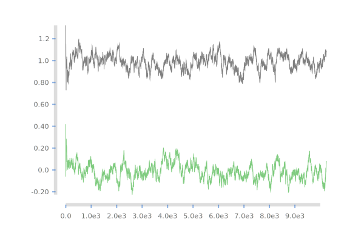
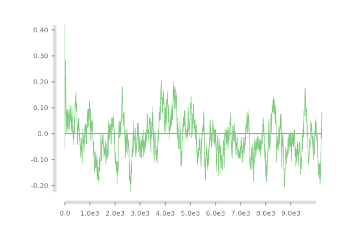
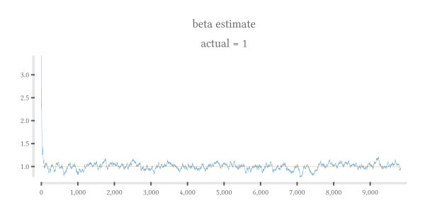
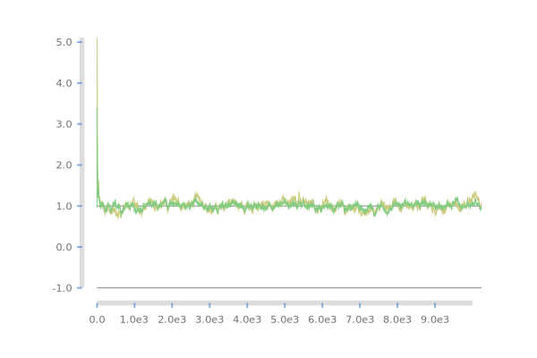
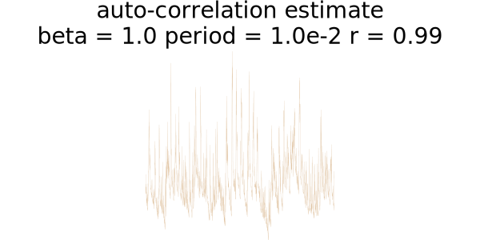

<meta charset="utf-8"> <link rel="stylesheet" href="other/lhs.css">
<script type="text/javascript" async
  src="https://cdn.mathjax.org/mathjax/latest/MathJax.js?config=TeX-MML-AM_CHTML">
</script>
<h1 id="online-random">online-random</h1>
<h2 id="scratchpad">scratchpad</h2>
<p></p>
<h2 id="alpha">alpha</h2>
<span class="math display">\[\begin{align}
\alpha &amp; = \frac{\sum y \sum x^2 - \sum x \sum xy}{n\sum x^2 - (\sum x)^2} \\
      &amp; = \frac{n^2 \bar{y} \overline{x^2} - n^2 \bar{x} \overline{xy}}{n^2 \overline{x^2} - n^2 \bar{x}^2} \\
      &amp; = \frac{\bar{y} \overline{x^2} - \bar{x} \overline{xy}}{\overline{x^2} - \bar{x}^2} \\

\end{align}\]</span>
<p></p>
<h2 id="beta">beta</h2>
<span class="math display">\[\begin{align}
\beta &amp; = \frac{n\sum xy - \sum x \sum y}{n\sum x^2 - (\sum x)^2} \\
      &amp; = \frac{n^2 \overline{xy} - n^2 \bar{x} \bar{y}}{n^2 \overline{x^2} - n^2 \bar{x}^2} \\
      &amp; = \frac{\overline{xy} - \bar{x} \bar{y}}{\overline{x^2} - \bar{x}^2} \\

\end{align}\]</span>
<p></p>
<h2 id="correlation-jumping-mid-stream">correlation jumping mid-stream</h2>
<p></p>
<h2 id="auto-correlation">auto-correlation</h2>
<p></p>
<h2 id="dependencies-across-moments">Dependencies across moments</h2>
<span class="math display">\[\begin{align}

x_{t+1} &amp; = (alpha_t^x + beta_t^{x-&gt;x} * ma_t^x + beta_t^{s-&gt;x} * std_t^x) + s_{t+1}\\
s_{t+1} &amp; = (alpha_t^s + beta_t^{x-&gt;s} * ma_t^x + beta_t^{s-&gt;s} * std_t^x) * N(0,1)


\end{align}\]</span>
<h2 id="ghc-options"><a href="https://downloads.haskell.org/~ghc/latest/docs/html/users_guide/flags.html#flag-reference">ghc options</a></h2>
<div class="sourceCode"><pre class="sourceCode literate haskell"><code class="sourceCode haskell"><span class="ot">{-# OPTIONS_GHC -Wall #-}</span>
<span class="ot">{-# OPTIONS_GHC -fno-warn-type-defaults #-}</span></code></pre></div>
<h2 id="pragmas"><a href="https://downloads.haskell.org/~ghc/latest/docs/html/users_guide/lang.html">pragmas</a></h2>
<div class="sourceCode"><pre class="sourceCode literate haskell"><code class="sourceCode haskell"><span class="co">-- doctest doesn&#39;t look at the cabal file, so you need pragmas here</span>
<span class="ot">{-# LANGUAGE NoImplicitPrelude #-}</span>
<span class="ot">{-# LANGUAGE OverloadedStrings #-}</span>
<span class="ot">{-# LANGUAGE DataKinds #-}</span>
<span class="ot">{-# LANGUAGE DeriveGeneric #-}</span>
<span class="ot">{-# LANGUAGE ScopedTypeVariables #-}</span>
<span class="ot">{-# LANGUAGE TypeOperators #-}</span>
<span class="ot">{-# LANGUAGE FlexibleInstances #-}</span></code></pre></div>
<h2 id="libraries"><a href="https://www.stackage.org/">libraries</a></h2>
<ul class="incremental">
<li><a href="https://www.stackage.org/package/protolude">protolude</a></li>
<li><a href="https://www.stackage.org/package/optparse-generic">optparse-generic</a></li>
<li><a href="https://www.stackage.org/package/mwc-random">mwc-random</a></li>
<li><a href="https://www.stackage.org/package/mwc-probability">mwc-probability</a></li>
<li><a href="https://www.stackage.org/package/streaming">streaming</a></li>
<li><a href="https://www.github.com/tonyday567/chart-unit">chart-unit</a></li>
<li><a href="https://www.github.com/tonyday567/numhask">numhask</a></li>
</ul>
<div class="sourceCode"><pre class="sourceCode literate haskell"><code class="sourceCode haskell"><span class="kw">import </span><span class="dt">Options.Generic</span>
<span class="kw">import </span><span class="dt">Online.Random</span>
<span class="kw">import </span><span class="dt">System.Random.MWC</span>
<span class="kw">import qualified</span> <span class="dt">Control.Foldl</span> <span class="kw">as</span> <span class="dt">L</span>
<span class="kw">import qualified</span> <span class="dt">Streaming</span> <span class="kw">as</span> <span class="dt">S</span>
<span class="kw">import </span><span class="dt">Streaming.Prelude</span> <span class="kw">hiding</span> (delay)
<span class="kw">import </span><span class="dt">Streaming.Internal</span>
<span class="kw">import </span><span class="dt">Online</span>
<span class="kw">import qualified</span> <span class="dt">NumHask.Prelude</span> <span class="kw">as</span> <span class="dt">P</span>
<span class="kw">import </span><span class="dt">NumHask.Prelude</span> (<span class="dt">Maybe</span>(..), <span class="dt">IO</span>, (&amp;), ($), (.), (+), (*), div, <span class="dt">Double</span>, (&gt;&gt;), <span class="dt">Integer</span>, (&lt;&gt;), <span class="dt">Functor</span>, <span class="dt">Monad</span>, <span class="dt">Int</span>, fmap, <span class="dt">Either</span>(..), pure, liftM, fromMaybe)
<span class="kw">import </span><span class="dt">Control.Category</span> (id)
<span class="kw">import </span><span class="dt">Chart</span> <span class="kw">hiding</span> (<span class="dt">Wrapped</span>, <span class="dt">Unwrapped</span>, each, (:&gt;), <span class="dt">Getter</span>)
<span class="kw">import </span><span class="dt">Control.Monad.Primitive</span> (<span class="dt">PrimState</span>)
<span class="co">-- import Text.Pretty.Simple (pPrint)</span>
<span class="kw">import qualified</span> <span class="dt">Data.Sequence</span> <span class="kw">as</span> <span class="dt">Seq</span></code></pre></div>
<h2 id="code">code</h2>
<ul class="incremental">
<li><a href="https://www.stackage.org/package/hoogle">hoogle</a></li>
</ul>
<div class="sourceCode"><pre class="sourceCode literate haskell"><code class="sourceCode haskell"><span class="kw">data</span> <span class="dt">Opts</span> w <span class="fu">=</span> <span class="dt">Opts</span>
    {<span class="ot"> streamMax ::</span> w <span class="ot">::</span><span class="fu">:</span> <span class="dt">Maybe</span> <span class="dt">Integer</span> <span class="fu">&lt;?&gt;</span> <span class="st">&quot;typical size of data stream&quot;</span>
    ,<span class="ot"> testCorr ::</span> w <span class="ot">::</span><span class="fu">:</span> <span class="dt">Maybe</span> <span class="dt">Double</span> <span class="fu">&lt;?&gt;</span> <span class="st">&quot;test correlation&quot;</span>
    ,<span class="ot"> rateCorr ::</span> w <span class="ot">::</span><span class="fu">:</span> <span class="dt">Maybe</span> <span class="dt">Double</span> <span class="fu">&lt;?&gt;</span> <span class="st">&quot;corr rate&quot;</span>
    }
    <span class="kw">deriving</span> (<span class="dt">Generic</span>)

<span class="kw">instance</span> <span class="dt">ParseRecord</span> (<span class="dt">Opts</span> <span class="dt">Wrapped</span>)

<span class="ot">scratch ::</span> <span class="dt">Chart</span> <span class="dt">SVG</span> <span class="ot">-&gt;</span> <span class="dt">IO</span> ()
scratch <span class="fu">=</span> fileSvg <span class="st">&quot;other/scratch.svg&quot;</span> (<span class="dv">600</span>,<span class="dv">400</span>)

<span class="ot">l1d ::</span> [<span class="dt">Double</span>] <span class="ot">-&gt;</span> <span class="dt">QDiagram</span> <span class="dt">SVG</span> <span class="dt">V2</span> <span class="dt">Double</span> <span class="dt">Any</span>
l1d <span class="fu">=</span> withChart def (lineChart [<span class="dt">LineConfig</span> <span class="fl">0.002</span> (<span class="dt">Color</span> <span class="fl">0.5</span> <span class="fl">0.8</span> <span class="fl">0.5</span> <span class="dv">1</span>)]) <span class="fu">.</span> (<span class="fu">:</span>[]) <span class="fu">.</span> P.zipWith <span class="dt">V2</span> [<span class="dv">0</span><span class="fu">..</span>]

<span class="ot">rvStd ::</span> <span class="dt">L.PrimMonad</span> m <span class="ot">=&gt;</span> <span class="dt">Gen</span> (<span class="dt">PrimState</span> m) <span class="ot">-&gt;</span> <span class="dt">Stream</span> (<span class="dt">Of</span> <span class="dt">Double</span>) m ()
rvStd gen <span class="fu">=</span> rv_ gen (repeat <span class="dv">0</span>) (repeat <span class="dv">1</span>)

<span class="ot">stdReg ::</span> <span class="dt">L.PrimMonad</span> m <span class="ot">=&gt;</span> <span class="dt">Gen</span> (<span class="dt">PrimState</span> m) <span class="ot">-&gt;</span> <span class="dt">Stream</span> (<span class="dt">Of</span> (<span class="dt">Double</span>, <span class="dt">Double</span>)) m ()
stdReg gen <span class="fu">=</span> xy_ (repeat <span class="dv">0</span>) (repeat <span class="dv">1</span>) (rvStd gen) (rvStd gen)

<span class="ot">delay1 ::</span> <span class="dt">L.Fold</span> a (<span class="dt">Maybe</span> a)
delay1 <span class="fu">=</span> <span class="dt">L.Fold</span> (\_ a <span class="ot">-&gt;</span> <span class="dt">Just</span> a) <span class="dt">Nothing</span> id
<span class="co">-- just delaying the stream via `yield P.nan &gt;&gt; s` say doesn&#39;t really work, as the copy . _1 . unseparate trick streams the nan first.  Streams are not zippy by ordering when the logic gets loopy</span>

<span class="ot">delay_ ::</span> <span class="dt">Int</span> <span class="ot">-&gt;</span> <span class="dt">L.Fold</span> a (<span class="dt">Maybe</span> a)
delay_ n <span class="fu">=</span> <span class="dt">L.Fold</span> (\x a <span class="ot">-&gt;</span> Seq.drop <span class="dv">1</span> <span class="fu">$</span> x <span class="fu">Seq.|&gt;</span> <span class="dt">Just</span> a) (Seq.fromList <span class="fu">$</span> P.replicate n <span class="dt">Nothing</span>) ((\<span class="kw">case</span> { <span class="dt">Seq.EmptyL</span> <span class="ot">-&gt;</span> <span class="dt">Nothing</span>; (x <span class="fu">Seq.:&lt;</span> _) <span class="ot">-&gt;</span> x}) <span class="fu">.</span> Seq.viewl)

<span class="ot">delay ::</span> (<span class="dt">P.BoundedField</span> a) <span class="ot">=&gt;</span> <span class="dt">Int</span> <span class="ot">-&gt;</span> <span class="dt">L.Fold</span> a a
delay n <span class="fu">=</span> fmap (P.fromMaybe P.nan) (delay_ (n<span class="fu">+</span><span class="dv">1</span>))

<span class="co">-- | branching pipe</span>
<span class="co">-- each [1..4] &amp; branch (L.purely scan L.sum) (map (*10)) &amp; eitherToPair &amp; toList_</span>
<span class="ot">branch ::</span> (<span class="dt">Functor</span> f, <span class="dt">Monad</span> (t (<span class="dt">Stream</span> f m2)), <span class="dt">Monad</span> m1, <span class="dt">Monad</span> m2, <span class="dt">Monad</span> m, <span class="dt">S.MFunctor</span> t, <span class="dt">S.MonadTrans</span> t) <span class="ot">=&gt;</span> (t (<span class="dt">Stream</span> f m2) r2 <span class="ot">-&gt;</span> <span class="dt">Stream</span> (<span class="dt">Of</span> a1) (<span class="dt">Stream</span> (<span class="dt">Of</span> b) m1) r1) <span class="ot">-&gt;</span> (<span class="dt">Stream</span> (<span class="dt">Of</span> a) (<span class="dt">Stream</span> (<span class="dt">Of</span> a) m) r <span class="ot">-&gt;</span> <span class="dt">Stream</span> f (t m2) r2) <span class="ot">-&gt;</span> <span class="dt">Stream</span> (<span class="dt">Of</span> a) m r <span class="ot">-&gt;</span> <span class="dt">Stream</span> (<span class="dt">Of</span> (<span class="dt">Either</span> a1 b)) m1 r1
branch m0 m1 s <span class="fu">=</span> s <span class="fu">&amp;</span> copy <span class="fu">&amp;</span> m1 <span class="fu">&amp;</span> distribute <span class="fu">&amp;</span> m0 <span class="fu">&amp;</span> unseparate <span class="fu">&amp;</span> maps sumToEither

<span class="ot">eitherToPair ::</span> (<span class="dt">Monad</span> m) <span class="ot">=&gt;</span> <span class="dt">Stream</span> (<span class="dt">Of</span> (<span class="dt">Either</span> <span class="dt">Double</span> <span class="dt">Double</span>)) m r <span class="ot">-&gt;</span> <span class="dt">Stream</span> (<span class="dt">Of</span> (<span class="dt">Double</span>,<span class="dt">Double</span>)) m r
eitherToPair s <span class="fu">=</span> loop <span class="dt">Nothing</span> <span class="dt">Nothing</span> s <span class="kw">where</span>
  loop stateL stateR str <span class="fu">=</span> <span class="kw">case</span> str <span class="kw">of</span>
    <span class="dt">Return</span> r <span class="ot">-&gt;</span> pure r
    <span class="dt">Effect</span> m <span class="ot">-&gt;</span> <span class="dt">Effect</span> (liftM (loop stateL stateR) m)
    <span class="dt">Step</span> (<span class="dt">Left</span> l <span class="fu">:&gt;</span> rest) <span class="ot">-&gt;</span> <span class="kw">case</span> stateR <span class="kw">of</span>
      <span class="dt">Nothing</span> <span class="ot">-&gt;</span> loop (<span class="dt">Just</span> l) <span class="dt">Nothing</span> rest
      <span class="dt">Just</span> r&#39; <span class="ot">-&gt;</span> <span class="kw">do</span>
        yield (l,r&#39;)
        loop <span class="dt">Nothing</span> <span class="dt">Nothing</span> rest
    <span class="dt">Step</span> (<span class="dt">Right</span> r <span class="fu">:&gt;</span> rest) <span class="ot">-&gt;</span> <span class="kw">case</span> stateL <span class="kw">of</span>
      <span class="dt">Nothing</span> <span class="ot">-&gt;</span> loop <span class="dt">Nothing</span> (<span class="dt">Just</span> r) rest
      <span class="dt">Just</span> l&#39; <span class="ot">-&gt;</span> <span class="kw">do</span>
        yield (l&#39;,r)
        loop <span class="dt">Nothing</span> <span class="dt">Nothing</span> rest

<span class="ot">maPipe ::</span> (<span class="dt">Functor</span> f, <span class="dt">Monad</span> (t (<span class="dt">Stream</span> f m2)), <span class="dt">Monad</span> m1, <span class="dt">Monad</span> m2, <span class="dt">Monad</span> m, <span class="dt">S.MFunctor</span> t, <span class="dt">S.MonadTrans</span> t) <span class="ot">=&gt;</span> (t (<span class="dt">Stream</span> f m2) r2 <span class="ot">-&gt;</span> <span class="dt">Stream</span> (<span class="dt">Of</span> a1) (<span class="dt">Stream</span> (<span class="dt">Of</span> a1) m1) r1) <span class="ot">-&gt;</span> (<span class="dt">Stream</span> (<span class="dt">Of</span> a) (<span class="dt">Stream</span> (<span class="dt">Of</span> a) m) r <span class="ot">-&gt;</span> <span class="dt">Stream</span> f (t m2) r2) <span class="ot">-&gt;</span> <span class="dt">Stream</span> (<span class="dt">Of</span> a) m r <span class="ot">-&gt;</span> <span class="dt">Stream</span> (<span class="dt">Of</span> a1) m1 r1
maPipe m0 m1 s <span class="fu">=</span> s <span class="fu">&amp;</span> copy <span class="fu">&amp;</span> m1 <span class="fu">&amp;</span> distribute <span class="fu">&amp;</span> m0 <span class="fu">&amp;</span> unseparate <span class="fu">&amp;</span> maps unify
  <span class="kw">where</span>
<span class="ot">    unify ::</span> <span class="dt">S.Sum</span> (<span class="dt">Of</span> a) (<span class="dt">Of</span> a) m <span class="ot">-&gt;</span> <span class="dt">Of</span> a m
    unify (<span class="dt">S.InL</span> a) <span class="fu">=</span> a
    unify (<span class="dt">S.InR</span> a) <span class="fu">=</span> a

<span class="co">-- | scan0 (\_ a -&gt; a) id id == id</span>
<span class="ot">scan0 ::</span> <span class="dt">Monad</span> m <span class="ot">=&gt;</span> (x <span class="ot">-&gt;</span> a <span class="ot">-&gt;</span> x) <span class="ot">-&gt;</span> (a <span class="ot">-&gt;</span> x) <span class="ot">-&gt;</span> (x <span class="ot">-&gt;</span> b) <span class="ot">-&gt;</span> <span class="dt">Stream</span> (<span class="dt">Of</span> a) m r <span class="ot">-&gt;</span> <span class="dt">Stream</span> (<span class="dt">Of</span> b) m r
scan0 acc beginf done s <span class="fu">=</span> <span class="kw">do</span>
    n <span class="ot">&lt;-</span> S.lift <span class="fu">$</span> next s
    <span class="kw">case</span> n <span class="kw">of</span>
      <span class="dt">Left</span> r <span class="ot">-&gt;</span> pure r
      (<span class="dt">Right</span> (a, rest)) <span class="ot">-&gt;</span>
          scan acc (beginf a) done rest

<span class="co">-- stdAuto 1 (repeat 1) (each t1) &amp; to</span>
<span class="ot">stdAuto ::</span>
    <span class="dt">Double</span> <span class="ot">-&gt;</span>
    <span class="dt">Stream</span> (<span class="dt">Of</span> <span class="dt">Double</span>) <span class="dt">IO</span> () <span class="ot">-&gt;</span>
    <span class="dt">Stream</span> (<span class="dt">Of</span> <span class="dt">Double</span>) <span class="dt">IO</span> () <span class="ot">-&gt;</span>
    <span class="dt">Stream</span> (<span class="dt">Of</span> <span class="dt">Double</span>) <span class="dt">IO</span> ()
stdAuto r b x <span class="fu">=</span>
    x <span class="fu">&amp;</span>
    L.purely scan ((,) <span class="fu">&lt;$&gt;</span> delay <span class="dv">0</span> <span class="fu">&lt;*&gt;</span> delay <span class="dv">1</span>) <span class="fu">&amp;</span>
    L.purely scan ((,) <span class="fu">&lt;$&gt;</span>
                   L.handles _1 (delay <span class="dv">0</span>) <span class="fu">&lt;*&gt;</span>
                   L.handles _2 (L.handles (filtered (P.not <span class="fu">.</span> P.isNaN)) (ma r)) <span class="fu">&amp;</span>
                    fmap (\(x&#39;,y&#39;) <span class="ot">-&gt;</span> (x&#39;,<span class="kw">if</span> P.isNaN y&#39; <span class="kw">then</span> <span class="dv">0</span> <span class="kw">else</span> y&#39;))) <span class="fu">&amp;</span>
    drop <span class="dv">2</span> <span class="fu">&amp;</span>
    (zipWith (\b&#39; (x&#39;,y) <span class="ot">-&gt;</span> x&#39;<span class="fu">+</span>b&#39;<span class="fu">*</span>y) b)


<span class="ot">scratchRegression ::</span> <span class="dt">Int</span> <span class="ot">-&gt;</span> <span class="dt">Double</span> <span class="ot">-&gt;</span> <span class="dt">Double</span> <span class="ot">-&gt;</span> <span class="dt">Double</span> <span class="ot">-&gt;</span> <span class="dt">IO</span> ()
scratchRegression n r a b <span class="fu">=</span> <span class="kw">do</span>
    g <span class="ot">&lt;-</span> create
    rc <span class="ot">&lt;-</span> xy_ (repeat a) (repeat b) (rvStd g) (rvStd g) <span class="fu">&amp;</span> take n <span class="fu">&amp;</span> L.purely scan ((,) <span class="fu">&lt;$&gt;</span> alpha (ma r) <span class="fu">&lt;*&gt;</span> beta (ma r)) <span class="fu">&amp;</span> drop <span class="dv">2</span> <span class="fu">&amp;</span> toList_
    <span class="kw">let</span> a&#39; <span class="fu">=</span> P.fst <span class="fu">&lt;$&gt;</span> rc
    <span class="kw">let</span> b&#39; <span class="fu">=</span> P.snd <span class="fu">&lt;$&gt;</span> rc
    fileSvg <span class="st">&quot;other/reg.svg&quot;</span> (<span class="dv">600</span>,<span class="dv">400</span>) <span class="fu">$</span> withChart def (lineChart [<span class="dt">LineConfig</span> <span class="fl">0.002</span> (<span class="dt">Color</span> <span class="fl">0.5</span> <span class="fl">0.8</span> <span class="fl">0.5</span> <span class="dv">1</span>), <span class="dt">LineConfig</span> <span class="fl">0.002</span> (<span class="dt">Color</span> <span class="fl">0.8</span> <span class="fl">0.8</span> <span class="fl">0.5</span> <span class="dv">1</span>), <span class="dt">LineConfig</span> <span class="fl">0.002</span> (<span class="dt">Color</span> <span class="fl">0.5</span> <span class="fl">0.5</span> <span class="fl">0.5</span> <span class="dv">1</span>), <span class="dt">LineConfig</span> <span class="fl">0.002</span> (<span class="dt">Color</span> <span class="fl">0.5</span> <span class="fl">0.5</span> <span class="fl">0.5</span> <span class="dv">1</span>)]) [P.zipWith <span class="dt">V2</span> [<span class="dv">0</span><span class="fu">..</span>] b&#39;, P.zipWith <span class="dt">V2</span> [<span class="dv">0</span><span class="fu">..</span>] a&#39;, P.take n <span class="fu">$</span> P.zipWith <span class="dt">V2</span> [<span class="dv">0</span><span class="fu">..</span>] (P.repeat a), P.take n <span class="fu">$</span> P.zipWith <span class="dt">V2</span> [<span class="dv">0</span><span class="fu">..</span>] (P.repeat b)]


<span class="ot">main ::</span> <span class="dt">IO</span> ()
main <span class="fu">=</span> <span class="kw">do</span>
<span class="ot">    o ::</span> <span class="dt">Opts</span> <span class="dt">Unwrapped</span> <span class="ot">&lt;-</span> unwrapRecord <span class="st">&quot;testing fake data&quot;</span>
    <span class="kw">let</span> n <span class="fu">=</span> fromMaybe <span class="dv">10000</span> (P.fromIntegral <span class="fu">&lt;$&gt;</span> streamMax o)
    <span class="kw">let</span> c <span class="fu">=</span> fromMaybe <span class="fl">0.8</span> (testCorr o)
    <span class="kw">let</span> r <span class="fu">=</span> fromMaybe <span class="fl">0.99</span> (rateCorr o)
    gen <span class="ot">&lt;-</span> create
    pure ()

<span class="co">-- (n,eff) &lt;- rvsp_ gen (repeat 0.5) &amp; L.purely scan (corr 0.99) &amp; drop 3 &amp; copy &amp; take 1000 &amp; toList_ &lt;&amp;&gt; take 100 &lt;&amp;&gt; l1d &lt;&amp;&gt; scratch &amp; length &lt;&amp;&gt; lazily</span>

    avCorr <span class="ot">&lt;-</span>
            rvsp_ gen (repeat <span class="dv">0</span> <span class="fu">&amp;</span> take (n <span class="ot">`div`</span> <span class="dv">2</span>) <span class="fu">&gt;&gt;</span> repeat c) <span class="fu">&amp;</span>
            L.purely scan (corr (ma r) (std r)) <span class="fu">&amp;</span>
            drop <span class="dv">2</span> <span class="fu">&amp;</span>
            drop <span class="dv">100</span> <span class="fu">&amp;</span>
            take n <span class="fu">&amp;</span>
            L.purely fold_ av

    corrL <span class="ot">&lt;-</span>
            rvsp_ gen (repeat <span class="dv">0</span> <span class="fu">&amp;</span> take (n <span class="ot">`div`</span> <span class="dv">2</span>) <span class="fu">&gt;&gt;</span> repeat c) <span class="fu">&amp;</span>
            L.purely scan (corr (ma r) (std r)) <span class="fu">&amp;</span>
            drop <span class="dv">2</span> <span class="fu">&amp;</span>
            drop <span class="dv">100</span> <span class="fu">&amp;</span>
            take n <span class="fu">&amp;</span>
            toList_

    autocorr1 <span class="ot">&lt;-</span>
            stdAuto <span class="fl">0.00001</span> (repeat <span class="dv">1</span>) (rvStd gen )<span class="fu">&amp;</span>
            take n <span class="fu">&amp;</span>
            toList_

    P.putStrLn (<span class="st">&quot;average correlation of &quot;</span> <span class="fu">&lt;&gt;</span> P.show avCorr <span class="fu">&lt;&gt;</span> <span class="st">&quot; should be half of &quot;</span> <span class="fu">&lt;&gt;</span> P.show c <span class="fu">&lt;&gt;</span> <span class="st">&quot; ok!?&quot;</span><span class="ot"> ::</span> <span class="dt">Text</span>)
    P.writeFile <span class="st">&quot;other/answer.md&quot;</span>
        (<span class="st">&quot;$\av_{i=1}^{&quot;</span> <span class="fu">&lt;&gt;</span> P.show n <span class="fu">&lt;&gt;</span> <span class="st">&quot;} corr = &quot;</span> <span class="fu">&lt;&gt;</span>
         P.show avCorr <span class="fu">&lt;&gt;</span> <span class="st">&quot;$&quot;</span>)


    rc <span class="ot">&lt;-</span> stdReg gen <span class="fu">&amp;</span> take n <span class="fu">&amp;</span> L.purely scan ((,) <span class="fu">&lt;$&gt;</span> alpha (ma r) <span class="fu">&lt;*&gt;</span> beta (ma r)) <span class="fu">&amp;</span> drop <span class="dv">2</span> <span class="fu">&amp;</span> toList_

    <span class="kw">let</span> a <span class="fu">=</span> P.fst <span class="fu">&lt;$&gt;</span> rc
    <span class="kw">let</span> b <span class="fu">=</span> P.snd <span class="fu">&lt;$&gt;</span> rc

    fileSvg <span class="st">&quot;other/beta.svg&quot;</span> (<span class="dv">600</span>,<span class="dv">400</span>) <span class="fu">$</span> withChart def (lineChart [<span class="dt">LineConfig</span> <span class="fl">0.002</span> (<span class="dt">Color</span> <span class="fl">0.5</span> <span class="fl">0.8</span> <span class="fl">0.5</span> <span class="dv">1</span>), <span class="dt">LineConfig</span> <span class="fl">0.002</span> (<span class="dt">Color</span> <span class="fl">0.5</span> <span class="fl">0.5</span> <span class="fl">0.5</span> <span class="dv">1</span>)]) [P.zipWith <span class="dt">V2</span> [<span class="dv">0</span><span class="fu">..</span>] b, P.take n <span class="fu">$</span> P.zipWith <span class="dt">V2</span> [<span class="dv">0</span><span class="fu">..</span>] (P.repeat <span class="dv">1</span>)]

    fileSvg <span class="st">&quot;other/alpha.svg&quot;</span> (<span class="dv">600</span>,<span class="dv">400</span>) <span class="fu">$</span> withChart def (lineChart [<span class="dt">LineConfig</span> <span class="fl">0.002</span> (<span class="dt">Color</span> <span class="fl">0.5</span> <span class="fl">0.8</span> <span class="fl">0.5</span> <span class="dv">1</span>), <span class="dt">LineConfig</span> <span class="fl">0.002</span> (<span class="dt">Color</span> <span class="fl">0.5</span> <span class="fl">0.5</span> <span class="fl">0.5</span> <span class="dv">1</span>)]) [P.zipWith <span class="dt">V2</span> [<span class="dv">0</span><span class="fu">..</span>] a, P.take n <span class="fu">$</span> P.zipWith <span class="dt">V2</span> [<span class="dv">0</span><span class="fu">..</span>] (P.repeat <span class="dv">0</span>)]

    fileSvg <span class="st">&quot;other/corrjump.svg&quot;</span> (<span class="dv">600</span>,<span class="dv">400</span>) <span class="fu">$</span> withChart def (lineChart [<span class="dt">LineConfig</span> <span class="fl">0.002</span> (<span class="dt">Color</span> <span class="fl">0.5</span> <span class="fl">0.8</span> <span class="fl">0.5</span> <span class="dv">1</span>), <span class="dt">LineConfig</span> <span class="fl">0.002</span> (<span class="dt">Color</span> <span class="fl">0.5</span> <span class="fl">0.5</span> <span class="fl">0.5</span> <span class="dv">1</span>)]) [P.zipWith <span class="dt">V2</span> [<span class="dv">0</span><span class="fu">..</span>] corrL, P.take n <span class="fu">$</span> P.zipWith <span class="dt">V2</span> [<span class="dv">0</span><span class="fu">..</span>] (P.repeat c)]

    autoEst <span class="ot">&lt;-</span> stdAuto r (repeat <span class="dv">10</span>) (rvStd gen ) <span class="fu">&amp;</span> take n <span class="fu">&amp;</span> L.purely scan (autocorr (ma r) (corr (ma r) (std r))) <span class="fu">&amp;</span> drop <span class="dv">3</span> <span class="fu">&amp;</span> toList_
    fileSvg <span class="st">&quot;other/autocorr.svg&quot;</span> (<span class="dv">600</span>,<span class="dv">400</span>) <span class="fu">$</span> withChart def (lineChart [<span class="dt">LineConfig</span> <span class="fl">0.002</span> (<span class="dt">Color</span> <span class="fl">0.5</span> <span class="fl">0.8</span> <span class="fl">0.5</span> <span class="dv">1</span>), <span class="dt">LineConfig</span> <span class="fl">0.002</span> (<span class="dt">Color</span> <span class="fl">0.5</span> <span class="fl">0.5</span> <span class="fl">0.5</span> <span class="dv">1</span>)]) [P.zipWith <span class="dt">V2</span> [<span class="dv">0</span><span class="fu">..</span>] autoEst]

    scratch <span class="fu">$</span> withChart def (lineChart [<span class="dt">LineConfig</span> <span class="fl">0.002</span> (<span class="dt">Color</span> <span class="fl">0.5</span> <span class="fl">0.8</span> <span class="fl">0.5</span> <span class="dv">1</span>), <span class="dt">LineConfig</span> <span class="fl">0.002</span> (<span class="dt">Color</span> <span class="fl">0.5</span> <span class="fl">0.5</span> <span class="fl">0.5</span> <span class="dv">1</span>)]) [P.zipWith <span class="dt">V2</span> [<span class="dv">0</span><span class="fu">..</span>] autoEst]</code></pre></div>
<p><span class="math inline">\(v_{i=1}^{10000} corr = 0.4023162622877611\)</span></p>
<h2 id="other-steaming-examples">Other Steaming Examples</h2>
<ul class="incremental">
<li>https://github.com/ElvishJerricco/kleisli-functors/blob/d0bde122c1d0c988b16d3737bba712931b25c963/src/Control/Kleisli/Functor.hs</li>
<li>https://github.com/jwiegley/notes/blob/f15aa380ddf98bc387b24a66171a62b38f236079/haskell/Teletype.hs</li>
<li>https://github.com/ejconlon/freeing/blob/422748981e5fc76a4aa3bf1d25eca479e4c54085/src/Freeing.hs</li>
<li>https://github.com/Tr1p0d/code-snippets/blob/2403ae3e97c3b4f8e27fcd5cb96b432c4f4ea0e4/ea/src/GeneticPipeline/GeneticPipeline.hs</li>
</ul>
<h2 id="regression">Regression</h2>
<p>https://en.wikipedia.org/wiki/Regression_analysis https://en.wikipedia.org/wiki/Linear_least_squares_(mathematics) https://stats.stackexchange.com/questions/81740/recursive-online-regularised-least-squares-algorithm</p>
<h2 id="online-ml">Online ML</h2>
<p>https://en.wikipedia.org/wiki/Online_machine_learning</p>
<p><span class="math display">\[\Gamma _{i}=\Gamma _{i-1}-{\frac {\Gamma _{i-1}x_{i}x_{i}^{T}\Gamma _{i-1}}{1+x_{i}^{T}\Gamma _{i-1}x_{i}}}\]</span></p>
<p><span class="math display">\[w_{i}=w_{i-1}-\Gamma _{i}x_{i}(x_{i}^{T}w_{i-1}-y_{i})\]</span></p>
<p>https://stats.stackexchange.com/questions/81740/recursive-online-regularised-least-squares-algorithm https://stats.stackexchange.com/questions/6920/efficient-online-linear-regression</p>
<h2 id="skewness">skewness</h2>
<p>https://stats.stackexchange.com/questions/6874/exponential-weighted-moving-skewness-kurtosis https://stats.stackexchange.com/questions/234460/online-calculation-of-exponential-moving-skewness-in-r-code</p>
<h2 id="autocorrelation">autocorrelation</h2>
<p>https://en.wikipedia.org/wiki/Recursive_least_squares_filter</p>
<hr />
<div class="footer">
<p>Powered by <a href="https://haskell-lang.org/">haskell</a>, <a href="https://docs.haskellstack.org/en/stable/README/">stack</a> and <a href="http://pandoc.org/">pandoc</a>.</p>
</div>
